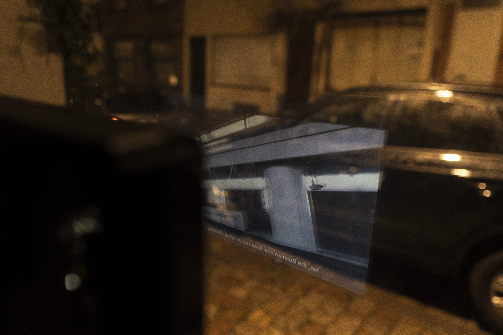
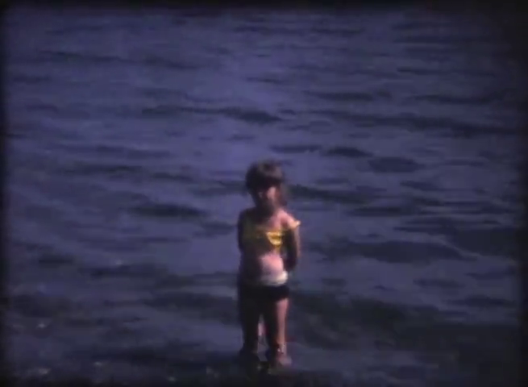
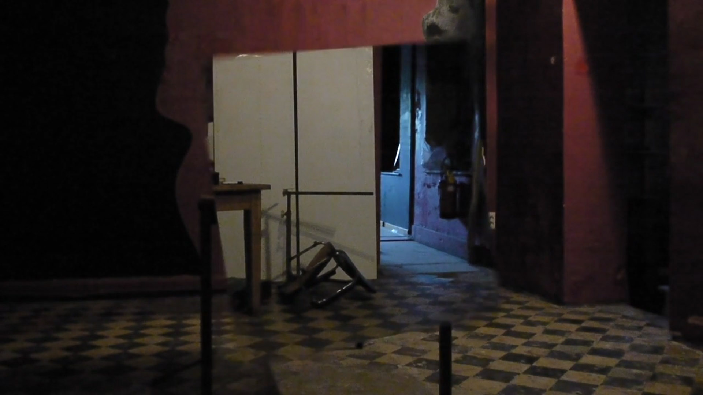

Ongoing / En cours
Ephemeral videoart station

[EN]
Video Vitrine is an ephemeral videoart screening station, accessible locally by the public space at Rue de l’Hectolitre 3-5, 1000 Bruxelles. The screen switches power on Feb 20 as a gesture of support for the Still Standing for culture movement.
Video Vitrine hosts and plays authors’ works whose video language is primarily based on (moving)image and(or) text. The sound is muted. No theme, no format. The screen is a 15” HD video station with integrated DVD player. One work at time – no compilations. Playing in a loop day and night.
If you have something appropriate for this context, please send us your video using a file-transfer platform to the email info@hectolitre.space, accompanied by a short info about the author and the work.
The screened works are communicated the day they start playing. The programme can host only a limited number of works, co-curated by the Hectolitre art-community. There is no deadline or pre-defined duration of the programme, it can stop and reappear any moment.
Contact person: Mladen Bundalo, mladen@hectolitre.space
---
[FR]
Video Vitrine est une station de projection d’art vidéo éphémère, ouverte sur l’espace public de la rue de l’Hectolitre 3-5, 1000 Bruxelles. L’écran s’allume le 20 février en soutien au mouvement Still Standing for Culture.
Video Vitrine présente les œuvres d’auteurs dont le langage vidéo est basé sur l’image (en mouvement) et/ou le texte. Le son est coupé. Pas de thème, pas de format. L’écran est une station vidéo HD de 15 pouces avec lecteur DVD intégré. Une œuvre à la fois – pas de compilation. Ça joue en boucle jour et nuit.
Si vous avez quelque-chose d’approprié pour ce contexte, veuillez nous envoyer votre vidéo en utilisant une plateforme de transfert de fichiers à l’adresse e-mail info@hectolitre.space, accompagnée d’une brève info sur l’auteur et l’œuvre.
Les œuvres projetées sont communiquées le jour où elles commencent à jouer. Le programme ne peut accueillir qu’un nombre limité d’œuvres, co-organisé par la communauté artistique Hectolitre. Il n’y a pas de date limite ou de durée prédéfinie du programme, il peut s’arrêter et réapparaître à tout moment.
Personne de contact: Mladen Bundalo, mladen@hectolitre.space
---
Currently playing / Lecture en cours:
Happy, happy, 2013, S8 - 4/3, 25fps, 04:13
Aurélia Pfend

